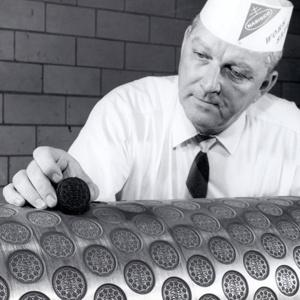

HISTORY
The "Oreo Biscuit" was first developed and produced by the National Biscuit Company (today known as Nabisco) in 1912 at its Chelsea, Manhattan factory in the current-day Chelsea Market complex, located on Ninth Avenue between 15th and 16th Streets. Today, this same block of Ninth Avenue is known as "Oreo Way." The name Oreo was first trademarked on March 14, 1912. It was launched as an imitation of the Hydrox cookie manufactured by Sunshine company, introduced in 1908.
The original design of the cookie featured a wreath around the edge of the cookie and the name "OREO" in the center. In the United States, they were sold for 25 cents a pound in novelty cans with clear glass tops. The Oreo Biscuit was renamed in 1921, to "Oreo Sandwich." A new design for the cookie was introduced in 1924. A lemon-filled variety was available briefly during the 1920s, but was discontinued.
In 1948, the Oreo Sandwich was renamed the "Oreo Creme Sandwich"; it was changed in 1974 to the Oreo Chocolate Sandwich Cookie. The modern-day Oreo design was developed in 1952 by William A. Turnier, to include the Nabisco logo. The modern Oreo cookie filling was developed by Nabisco's principal food scientist, Sam Porcello. Porcello held five patents directly related to his work on the Oreo. He also created a line of Oreo cookies covered in dark chocolate and white chocolate. Porcello retired from Nabisco in 1993.